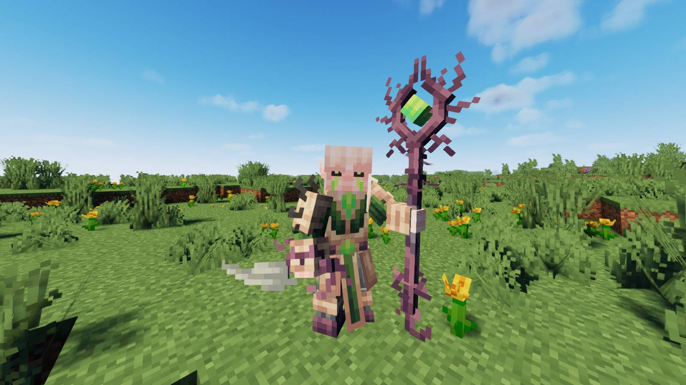

Гайды / Бой
Бестиарий: монстры и боссы
Бестиарий: больше сотни уникальных мобов, где каждый из них водится, с каким шансом появляется и что с него падает.

Как читать бестиарий
Все шансы ниже взяты прямо из настроек сервера. Мобы появляются двумя способами.
- Замена. Игра хочет заспавнить обычного моба, а вместо него появляется особый. Шанс показывает, какая доля обычных мобов этого вида превращается в особого. «6% от ночных монстров» значит, что примерно каждый семнадцатый монстр в этом биоме будет эльфом.
- Свой спавн. Моб появляется сам в подходящем месте рядом с игроком. Шанс показывает вероятность каждой попытки, а лимит не даёт мобам скапливаться.
Почти у всех мобов есть лимит: если рядом уже есть такой же, новый не появится. Поэтому редкого босса можно встретить только одного на большой округе.
Боссы с шансом 0,1% — настоящая редкость. Их проще встретить на событиях: на «Жизни на кон» красный сектор колеса вызывает одного из них.
Скелеты
Каждый обычный скелет, зимогор и болотник в любом биоме заменяется на одного из четырёх видов:
| Моб | Шанс | Здоровье | Как опасен |
|---|---|---|---|
| Скелет-лучник | 45% скелетов | 20 | Держит дистанцию, стреляет метко |
| Скелет-воин | 30% скелетов | 24 | Бежит вплотную, бьёт сериями |
| Скелет-маг | 15% скелетов | 18 | Бьёт магическими снарядами издалека |
| Элитный скелет | 10% скелетов | 45 | Сильнее и крепче, ведёт за собой остальных |
Они же приходят из спавнеров в подземельях. С каждого падают кости и редкие трофеи.
Криперы
Каждый крипер заменяется на крипера своего биома. Выглядят по-разному, взрываются одинаково больно.
| Крипер | Где |
|---|---|
| Равнинный крипер | Равнины, Подсолнуховые равнины, Луг, Степь, Поляна в долине, Цветущая долина, Цветущее плато, Зелёная долина, Лунная долина, Лавандовая долина |
| Еловый крипер | Тайга, Древняя сосновая тайга, Древняя еловая тайга, Берёзовая тайга, Сибирская тайга, Сибирская роща, Щит, Поляна Щита, Лесистое нагорье, Низины Йосемити, Йеллоустоун |
| Снежный крипер | Заснеженные равнины, Заснеженная тайга, Ледяные шипы, Роща, Заснеженные склоны, Заледенелые пики, Замёрзшая река, Замёрзший океан, Глубокий замёрзший океан, Альпийская роща, Зимний лес, Зимняя низина, Заснеженный кленовый лес, Заснеженный Щит, Заснеженная вишнёвая роща, Заснеженные пустоши, Холодный кустарник, Ледяные утёсы, Ледниковое ущелье, Ледяная топь, Зимние альфа-острова, Зимние небесные острова, Пещеры морозного огня |
| Горный крипер | Ветреные холмы, Ветреные гравийные холмы, Ветреный лес, Каменистые пики, Зубчатые пики, Каменистый берег, Альпийское нагорье, Изумрудные пики, Скалистые горы, Туманная гора, Алые горы, Каменные шпили, Ветреные шпили, Нагорье, Умеренное нагорье, Гранитные утёсы, Белые утёсы, Базальтовые утёсы, Утёсы Йосемити, Кальдера, Вулканический кратер, Вулканические пики, Аметистовый каньон, Скалистый кустарник |
| Тёмно-дубовый крипер | Тёмный лес, Бледный сад, Лунная роща |
| Тропический крипер | Джунгли, Редкие джунгли, Тропические джунгли, Скалистые джунгли, Горные джунгли, Аметистовый тропический лес, Облачный лес, Подземные джунгли |
| Бамбуковый крипер | Бамбуковые джунгли |
| Пустынный крипер | Пустыня, Древние пески, Пустынный каньон, Оазис, Пустынные шпили, Цветущая пустыня, Песчаниковая долина, Гравийная пустыня |
| Крипер пустошей | Пустошь, Выветренная пустошь, Лесистая пустошь, Каньон Брайс, Белая меса, Искажённая меса, Расписные горы, Красный оазис |
| Саванный крипер | Саванна, Плато саванны, Ветреная саванна, Пепельная саванна, Расколотая саванна, Склоны саванны, Саванные пустоши, Засушливое нагорье, Жаркий кустарник, Кустарник, Кустарниковая степь |
| Болотный крипер | Болото, Мангровое болото, Орхидеевое болото |
| Пляжный крипер | Пляж, Заснеженный пляж, Река, Океан, Глубокий океан, Умеренно-тёплый океан, Глубокий умеренно-тёплый океан, Тёплый океан, Холодный океан, Глубокий холодный океан, Галечный пляж, Тёплая река, Глубокий тёплый океан |
| Грибной крипер | Грибные поля, Грибные пещеры |
| Сталактитовый крипер | Карстовые пещеры |
| Пещерный крипер | Пышные пещеры, Глубокая тьма, Андезитовые пещеры, Глубокие пещеры, Диоритовые пещеры, Гранитные пещеры, Заражённые пещеры, Мантийные пещеры, Термальные пещеры, Туфовые пещеры |
| Пещерный крипер | Любой биом ниже Y 40 |
| Рождественский крипер | Все остальные биомы |
Пауки
30% обычных пауков превращаются в особых. Рядом может быть не больше двух особых пауков.
| Паук | Где | Здоровье |
|---|---|---|
| Ядовитый паук | Джунгли, Редкие джунгли, Бамбуковые джунгли, Болото, Мангровое болото, Пышные пещеры, Тропические джунгли, Скалистые джунгли, Горные джунгли, Облачный лес, Аметистовый тропический лес, Аметистовый каньон, Орхидеевое болото, Подземные джунгли, Грибные пещеры | 34 |
| Паук-душитель | Тёмный лес, Бледный сад, Древняя еловая тайга, Древняя сосновая тайга, Глубокая тьма, Карстовые пещеры, Лунная роща, Сибирская роща, Андезитовые пещеры, Глубокие пещеры, Диоритовые пещеры, Гранитные пещеры, Заражённые пещеры, Мантийные пещеры, Термальные пещеры, Туфовые пещеры, Пещеры морозного огня. Также в любом другом биоме ниже Y 40 | 46 |
| Паук-охотник | Все остальные биомы выше Y 40 | 40 |
Леса и луга
Появляются на поверхности вместо ночных монстров (зомби, скелетов, пауков, криперов, ведьм, эндерменов).
| Моб | Где | Шанс | Здоровье | Лимит |
|---|---|---|---|---|
| Эльф-мечник 2,4%; Эльф-следопыт 1,8%; Эльф-маг 1,2%; Рунический медведь 0,6% | Березняк, Древний березняк, Цветочный лес, Луг, Лавандовый лес, Лавандовая долина, Цветущая долина, Цветущее плато, Лунная роща, Лунная долина | 6% от монстров всего | 30–70 | не больше 6 в радиусе 48 бл. |
| Эльф-друид (босс) | Березняк, Древний березняк, Цветочный лес, Луг, Лавандовый лес, Лавандовая долина, Цветущая долина, Цветущее плато, Лунная роща, Лунная долина | 0,5% от монстров | 650 | один на 160 бл. вокруг |
| Дух природы | Лес, Тёмный лес, Древняя еловая тайга, Древняя сосновая тайга, Облачный лес, Зелёная долина, Лесистое нагорье, Аметистовый тропический лес, Поляна в долине, Березняк, Древний березняк, Цветочный лес, Луг, Лавандовый лес, Лавандовая долина, Цветущая долина, Цветущее плато, Лунная роща, Лунная долина | 3% от монстров | 8 | не больше 3 в радиусе 48 бл. |
| Укоренённый воин (босс) | Лес, Тёмный лес, Древняя еловая тайга, Древняя сосновая тайга, Облачный лес, Зелёная долина, Лесистое нагорье, Аметистовый тропический лес, Поляна в долине | 0,1% от монстров | 180 | один на 256 бл. вокруг |
| Лесной убийца (босс) | Лес, Тёмный лес, Древняя еловая тайга, Древняя сосновая тайга, Облачный лес, Зелёная долина, Лесистое нагорье, Аметистовый тропический лес, Поляна в долине | 0,1% от монстров | 160 | один на 256 бл. вокруг |
| Владычица леса (босс) | Лес, Тёмный лес, Древняя еловая тайга, Древняя сосновая тайга, Облачный лес, Зелёная долина, Лесистое нагорье, Аметистовый тропический лес, Поляна в долине | 0,1% от монстров | 400 | один на 384 бл. вокруг |
| Глюм (босс) | Тёмный лес, Грибные пещеры | 0,1% от монстров | 350 | один на 384 бл. вокруг |
Глюм живёт ещё и на Грибных полях: там им становится 1% появляющихся грибных коров.
Тайга, нагорья и горы
Появляются на поверхности вместо ночных монстров (зомби, скелетов, пауков, криперов, ведьм, эндерменов). Гоблины бродят отрядами до шести.
| Моб | Где | Шанс | Здоровье | Лимит |
|---|---|---|---|---|
| Гоблин-воин 1,4%; Гоблин-лучник 1,4%; Гоблин с дубиной 0,92%; Гоблин с ножом 0,92%; Гоблин со сковородой 0,46%; Гоблин с ложкой 0,46%; Гоблин с вилами 0,46% | Тайга, Ветреный лес, Ветреные холмы, Ветреные гравийные холмы, Берёзовая тайга, Сибирская тайга, Сибирская роща, Щит, Поляна Щита, Нагорье, Умеренное нагорье, Скалистый кустарник, Гранитные утёсы | 6% от монстров всего | 20–24 | не больше 6 в радиусе 48 бл. |
| Гоблин-шаман | Тайга, Ветреный лес, Ветреные холмы, Ветреные гравийные холмы, Берёзовая тайга, Сибирская тайга, Сибирская роща, Щит, Поляна Щита, Нагорье, Умеренное нагорье, Скалистый кустарник, Гранитные утёсы | 1% от монстров | 60 | один на 96 бл. вокруг |
| Король гоблинов (босс) | Тайга, Ветреный лес, Ветреные холмы, Ветреные гравийные холмы, Берёзовая тайга, Сибирская тайга, Сибирская роща, Щит, Поляна Щита, Нагорье, Умеренное нагорье, Скалистый кустарник, Гранитные утёсы | 0,5% от монстров | 300 | один на 160 бл. вокруг |
| Элдрик (босс) | Каменистые пики, Зубчатые пики, Ветреные холмы, Скалистые горы, Изумрудные пики, Альпийское нагорье, Алые горы, Туманная гора, Вулканические пики, только выше Y 62 | 0,1% от монстров | 450 | один на 384 бл. вокруг |
| Тэнгу (босс) | Зубчатые пики, Каменистые пики, Туманная гора, Ветреные шпили, Каменные шпили, Изумрудные пики, Вишнёвая роща, Бамбуковые джунгли, Сакуровая роща, Сакуровая долина, Заснеженная вишнёвая роща | 0,1% от монстров | 280 | один на 256 бл. вокруг |
Болота, реки и сакуровые рощи
Появляются вместо ночных монстров (зомби, скелетов, пауков, криперов, ведьм, эндерменов). Болотная банда приходит и под землёй, и днём в тени.
| Моб | Где | Шанс | Здоровье | Лимит |
|---|---|---|---|---|
| Крыса 4%; Болотный паук 3%; Комар 3%; Пиявка 2% | Болото, Мангровое болото, Орхидеевое болото, Ледяная топь | 12% от монстров всего | 8–20 | не больше 6 в радиусе 48 бл. |
| Король крыс (босс) | Болото, Мангровое болото, Орхидеевое болото, Ледяная топь | 0,5% от монстров | 600 | один на 160 бл. вокруг |
| Каппа | Река, Тёплая река, Сакуровая долина, Вишнёвая роща, Бамбуковые джунгли, Сакуровая роща, Заснеженная вишнёвая роща | 3% от монстров | 45 | не больше 2 в радиусе 64 бл. |
| Юрэй бродячий 0,67%; Юрэй плачущий 0,33% | Вишнёвая роща, Бамбуковые джунгли, Сакуровая роща, Сакуровая долина, Заснеженная вишнёвая роща, Бледный сад | 1% от монстров всего | 45 | один на 96 бл. вокруг |
| Они (босс) | Вишнёвая роща, Бамбуковые джунгли, Сакуровая роща, Сакуровая долина, Заснеженная вишнёвая роща, Вулканический кратер, Вулканические пики, Кальдера, Базальтовые утёсы | 0,1% от монстров | 700 | один на 384 бл. вокруг |
Снега, саванны и пустыни
| Моб | Где | Шанс | Здоровье | Лимит |
|---|---|---|---|---|
| Йети (босс) | Заснеженные склоны, Заледенелые пики, Ледяные шипы, Зубчатые пики, Альпийская роща, Ледяные утёсы, Ледниковое ущелье, Заснеженный Щит, Зимняя низина, Зимние небесные острова | 0,1% от монстров | 1000 | один на 384 бл. вокруг |
| Кригер (босс) | Заснеженная тайга, Роща, Заснеженные равнины, Зимний лес, Заснеженный кленовый лес, Зимние альфа-острова | 0,1% от монстров | 900 | один на 384 бл. вокруг |
| Нил — орк-берсерк (босс) | Саванна, Плато саванны, Ветреная саванна, Пепельная саванна, Расколотая саванна, Склоны саванны, Саванные пустоши, Засушливое нагорье, Жаркий кустарник, Кустарниковая степь | 0,1% от монстров | 450 | один на 384 бл. вокруг |
| Солнечный дух 40%; Солнечный провидец 20%; Солнечный чародей 20%; Солнечный воин 20% | Пустыня, Пустошь, Выветренная пустошь, Лесистая пустошь, Древние пески, Пустынный каньон, Пустынные шпили, Оазис, Цветущая пустыня, Песчаниковая долина, Красный оазис, Каньон Брайс, Белая меса, Искажённая меса, Расписные горы, только днём | свой спавн, 0,2% за попытку; проценты — доля каждого вида | 10–90 | не больше 4 в радиусе 64 бл. |
Каждая тысячная корова в мире — не простая. Это приманка Вендиго: рядом с такой коровой появляется сам Вендиго (350 здоровья).
Дикие животные
Живут сами по себе: свой спавн с шансом 0,15% за попытку, не больше одного зверя на чанк. Крабы появляются и на берегу, и в воде. Медведей и крокодилов лучше обходить стороной.
| Животное | Где | Здоровье |
|---|---|---|
| Бурый медведь | Подсолнуховые равнины, Равнины, Лес, Цветочный лес, Березняк, Тёмный лес, Древний березняк, Древняя сосновая тайга, Древняя еловая тайга, Тайга, Ветреные холмы, Ветреные гравийные холмы, Луг, Каменистые пики, Берёзовая тайга, Сибирская тайга, Сибирская роща, Щит, Поляна Щита, Лесистое нагорье, Нагорье, Альпийское нагорье, Умеренное нагорье, Низины Йосемити, Йеллоустоун, Скалистые горы, Изумрудные пики, Зелёная долина | 50 |
| Чёрный медведь | Подсолнуховые равнины, Равнины, Лес, Цветочный лес, Березняк, Тёмный лес, Древний березняк, Древняя сосновая тайга, Древняя еловая тайга, Тайга, Ветреные холмы, Ветреные гравийные холмы, Луг, Каменистые пики, Берёзовая тайга, Щит, Поляна Щита, Лесистое нагорье, Умеренное нагорье, Низины Йосемити, Йеллоустоун, Лунная роща, Лавандовый лес, Зелёная долина, Облачный лес | 40 |
| Белый медведь | Заснеженные равнины, Ледяные шипы, Заснеженная тайга, Роща, Заснеженные склоны, Заледенелые пики, Зубчатые пики, Замёрзшая река, Альпийская роща, Ледяные утёсы, Ледниковое ущелье, Зимний лес, Зимняя низина, Заснеженный Щит, Заснеженный кленовый лес, Ледяная топь, Зимние альфа-острова, Зимние небесные острова | 60 |
| Панда | Бамбуковые джунгли, Лес, Цветочный лес, Березняк, Тёмный лес, Древний березняк, Каменистые пики, Тропические джунгли, Скалистые джунгли, Горные джунгли, Облачный лес, Сакуровая роща | 40 |
| Крысы: чёрная, бурая, серая | Подсолнуховые равнины, Равнины, Лес, Березняк, Тёмный лес, Древний березняк, Древняя сосновая тайга, Древняя еловая тайга, Тайга, Ветреные холмы, Ветреные гравийные холмы, Луг, Каменистые пики, Болото, Мангровое болото, Саванна, Плато саванны, Пустошь, Выветренная пустошь, Лесистая пустошь, Карстовые пещеры, Пышные пещеры, Глубокая тьма, Степь, Кустарник, Поляна в долине, Зелёная долина, Цветущая долина, Щит, Берёзовая тайга, Сибирская тайга, Лесистое нагорье, Умеренное нагорье, Нагорье, Йеллоустоун, Кустарниковая степь, Орхидеевое болото, Андезитовые пещеры, Диоритовые пещеры, Гранитные пещеры, Туфовые пещеры | 8 |
| Белки: бурая, рыжая, серая | Подсолнуховые равнины, Равнины, Лес, Цветочный лес, Березняк, Тёмный лес, Древний березняк, Тайга, Ветреные холмы, Ветреные гравийные холмы, Луг, Саванна, Плато саванны, Берёзовая тайга, Сибирская тайга, Сибирская роща, Щит, Поляна Щита, Лесистое нагорье, Лавандовый лес, Лунная роща, Сакуровая роща, Облачный лес, Умеренное нагорье, Зелёная долина, Цветущая долина, Поляна в долине, Низины Йосемити, Заснеженный кленовый лес | 6 |
| Утки: белая и кряква | Каменистый берег, Река, Джунгли, Редкие джунгли, Бамбуковые джунгли, Подсолнуховые равнины, Равнины, Лес, Цветочный лес, Березняк, Тёмный лес, Древний березняк, Луг, Саванна, Плато саванны, Болото, Мангровое болото, Тёплая река, Зелёная долина, Поляна в долине, Цветущая долина, Лавандовая долина, Сакуровая долина, Лунная долина, Орхидеевое болото, Поляна Щита, Степь | 6 |
| Крабы: красный, илистый, рак-отшельник | Река, Пляж, Каменистый берег, Тёплый океан, Умеренно-тёплый океан, Глубокий умеренно-тёплый океан, Океан, Глубокий океан, Холодный океан, Глубокий холодный океан, Замёрзший океан, Глубокий замёрзший океан, Галечный пляж, Глубокий тёплый океан, Острова миражей, Альфа-острова, Тёплая река | 10 |
| Крокодилы: гребнистый и кубинский | Болото, Мангровое болото, Джунгли, Редкие джунгли, Бамбуковые джунгли, Река, Орхидеевое болото, Тропические джунгли, Скалистые джунгли, Горные джунгли, Тёплая река, Аметистовый тропический лес, Оазис, Красный оазис | 45 |
| Светлячки | Везде, кроме пустынь и снегов | 2 |
Почти любого из них можно приручить и держать как питомца.
Моря, реки и озёра
В воде живут 40 видов морских существ. Часть подменяет обычных рыб и кальмаров, часть появляется сама прямо в воде рядом с игроком. В одном месте может собраться не больше 24 существ, а крупные хищники — акулы, рыба-меч, косатки — плавают поодиночке, по одному на 96 блоков.
Где сколько живности:
- Тёплые моря — самые живые: рифовые рыбы, раки-щелкуны и раки-богомолы, жемчужницы, осьминоги, наутилусы, акулы-молоты.
- Обычный и умеренно-тёплый океан — окуни, скаты, крабы, омары, медузы, дельфины.
- Холодные и ледяные моря — омары, крабы-пауки, морские ангелы, нарвалы и косатки.
- Глубоководье — удильщики, сельдяные короли и гигантский кальмар.
- Реки, болота и пруды в джунглях — сомы, петушки, электрические угри, пираньи, ламантины.
| Существо | Где | Шанс | Здоровье |
|---|---|---|---|
| Акула | Тёплый океан, Глубокий тёплый океан, Умеренно-тёплый океан, Глубокий умеренно-тёплый океан, Острова миражей, Океан, Глубокий океан, Весенние небесные острова, Летние небесные острова, Осенние небесные острова, Холодный океан, Глубокий холодный океан, Зимние небесные острова, Замёрзший океан, Глубокий замёрзший океан, Зимние альфа-острова | плюс свой спавн в воде | 30 |
| Акула-молот | Тёплый океан, Глубокий тёплый океан, Умеренно-тёплый океан, Глубокий умеренно-тёплый океан, Острова миражей | плюс свой спавн в воде | 35 |
| Барракуда | Тёплый океан, Глубокий тёплый океан, Умеренно-тёплый океан, Глубокий умеренно-тёплый океан, Острова миражей | до 15% кальмаров; плюс свой спавн в воде | 24 |
| Гигантский кальмар | Глубокий океан, Глубокий умеренно-тёплый океан, Глубокий холодный океан, Глубокий замёрзший океан, Глубокий тёплый океан | до 4% светящихся кальмаров; плюс свой спавн в воде | 60 |
| Голубой дракон | Тёплый океан, Глубокий тёплый океан, Умеренно-тёплый океан, Глубокий умеренно-тёплый океан, Острова миражей | до 4,6% тропических рыб; плюс свой спавн в воде | 12 |
| Дельфин | Тёплый океан, Глубокий тёплый океан, Умеренно-тёплый океан, Глубокий умеренно-тёплый океан, Океан, Глубокий океан, Весенние небесные острова, Летние небесные острова, Осенние небесные острова | до 60% дельфинов | 22 |
| Жемчужный моллюск | Тёплый океан, Глубокий тёплый океан, Умеренно-тёплый океан, Глубокий умеренно-тёплый океан, Острова миражей | до 2,7% тропических рыб; плюс свой спавн в воде | 10 |
| Косатка | Океан, Глубокий океан, Весенние небесные острова, Летние небесные острова, Осенние небесные острова, Холодный океан, Глубокий холодный океан, Зимние небесные острова, Замёрзший океан, Глубокий замёрзший океан, Зимние альфа-острова | плюс свой спавн в воде | 60 |
| Краб | Тёплый океан, Глубокий тёплый океан, Умеренно-тёплый океан, Глубокий умеренно-тёплый океан, Океан, Глубокий океан, Весенние небесные острова, Летние небесные острова, Осенние небесные острова, Холодный океан, Глубокий холодный океан, Зимние небесные острова, Мангровое болото, Острова миражей, Альфа-острова, Галечный пляж, Пляж, Каменистый берег, Грибные поля, Заснеженный пляж, Река, Болото, Орхидеевое болото, Зелёная долина, Поляна Щита, Тёплая река, Джунгли, Редкие джунгли, Бамбуковые джунгли, Тропические джунгли, Скалистые джунгли, Аметистовый тропический лес, Оазис, Красный оазис | до 13% тропических рыб; до 12% трески; плюс свой спавн в воде | 8 |
| Краб-паук | Холодный океан, Глубокий холодный океан, Зимние небесные острова, Замёрзший океан, Глубокий замёрзший океан, Океан, Глубокий океан, Весенние небесные острова, Летние небесные острова, Осенние небесные острова, Альфа-острова, Галечный пляж, Пляж, Каменистый берег, Грибные поля, Заснеженный пляж, Зимние альфа-острова | до 7% трески; до 6,4% лосося; плюс свой спавн в воде | 10 |
| Крылатка | Тёплый океан, Глубокий тёплый океан, Умеренно-тёплый океан, Глубокий умеренно-тёплый океан | до 27% иглобрюхов; плюс свой спавн в воде | 14 |
| Ламантин | Тёплая река, Мангровое болото, Тёплый океан, Глубокий тёплый океан | до 22% кальмаров; до 1,9% тропических рыб; плюс свой спавн в воде | 40 |
| Махи-махи | Тёплый океан, Глубокий тёплый океан, Умеренно-тёплый океан, Глубокий умеренно-тёплый океан, Океан, Глубокий океан, Весенние небесные острова, Летние небесные острова, Осенние небесные острова, Острова миражей, Альфа-острова, Галечный пляж, Пляж, Каменистый берег, Грибные поля | до 18% кальмаров; до 6,6% трески; плюс свой спавн в воде | 18 |
| Медуза | Тёплый океан, Глубокий тёплый океан, Умеренно-тёплый океан, Глубокий умеренно-тёплый океан, Океан, Глубокий океан, Весенние небесные острова, Летние небесные острова, Осенние небесные острова, Холодный океан, Глубокий холодный океан, Зимние небесные острова, Острова миражей, Альфа-острова, Галечный пляж, Пляж, Каменистый берег, Грибные поля, Заснеженный пляж | до 62% кальмаров; плюс свой спавн в воде | 12 |
| Морская звезда | Тёплый океан, Глубокий тёплый океан, Умеренно-тёплый океан, Глубокий умеренно-тёплый океан, Океан, Глубокий океан, Весенние небесные острова, Летние небесные острова, Осенние небесные острова, Холодный океан, Глубокий холодный океан, Зимние небесные острова, Замёрзший океан, Глубокий замёрзший океан, Острова миражей, Альфа-острова, Галечный пляж, Пляж, Каменистый берег, Грибные поля, Заснеженный пляж, Зимние альфа-острова | до 15% лосося; до 9% трески; плюс свой спавн в воде | 5 |
| Морская оса | Тёплый океан, Глубокий тёплый океан | до 4,5% кальмаров; плюс свой спавн в воде | 20 |
| Морская улитка | Умеренно-тёплый океан, Глубокий умеренно-тёплый океан, Океан, Глубокий океан, Весенние небесные острова, Летние небесные острова, Осенние небесные острова, Острова миражей, Альфа-острова, Галечный пляж, Пляж, Каменистый берег, Грибные поля | до 8,1% трески; до 2,5% тропических рыб; плюс свой спавн в воде | 10 |
| Морской ангел | Холодный океан, Глубокий холодный океан, Зимние небесные острова, Замёрзший океан, Глубокий замёрзший океан, Заснеженный пляж, Зимние альфа-острова | до 27% лосося; плюс свой спавн в воде | 12 |
| Морской конёк | Тёплый океан, Глубокий тёплый океан, Умеренно-тёплый океан, Глубокий умеренно-тёплый океан, Острова миражей | до 5,9% тропических рыб; плюс свой спавн в воде | 7 |
| Морской окунь | Умеренно-тёплый океан, Глубокий умеренно-тёплый океан, Океан, Глубокий океан, Весенние небесные острова, Летние небесные острова, Осенние небесные острова, Холодный океан, Глубокий холодный океан, Зимние небесные острова, Острова миражей, Альфа-острова, Галечный пляж, Пляж, Каменистый берег, Грибные поля, Заснеженный пляж | до 21% трески; до 11% лосося; плюс свой спавн в воде | 8 |
| Морской слизень | Тёплый океан, Глубокий тёплый океан, Умеренно-тёплый океан, Глубокий умеренно-тёплый океан, Острова миражей | до 3,9% тропических рыб; плюс свой спавн в воде | 10 |
| Нарвал | Замёрзший океан, Глубокий замёрзший океан, Зимние альфа-острова | до 50% кальмаров; плюс свой спавн в воде | 24 |
| Наутилус | Тёплый океан, Глубокий тёплый океан | до 9,1% кальмаров; плюс свой спавн в воде | 10 |
| Омар | Океан, Глубокий океан, Весенние небесные острова, Летние небесные острова, Осенние небесные острова, Холодный океан, Глубокий холодный океан, Зимние небесные острова, Альфа-острова, Галечный пляж, Пляж, Каменистый берег, Грибные поля, Заснеженный пляж | до 21% трески; плюс свой спавн в воде | 8 |
| Осьминог | Тёплый океан, Глубокий тёплый океан, Умеренно-тёплый океан, Глубокий умеренно-тёплый океан, Океан, Глубокий океан, Весенние небесные острова, Летние небесные острова, Осенние небесные острова, Холодный океан, Глубокий холодный океан, Зимние небесные острова, Острова миражей, Альфа-острова, Галечный пляж, Пляж, Каменистый берег, Грибные поля, Заснеженный пляж | до 67% кальмаров; плюс свой спавн в воде | 12 |
| Петушок | Тёплая река, Мангровое болото, Пышные пещеры, Подземные джунгли, Джунгли, Редкие джунгли, Бамбуковые джунгли, Тропические джунгли, Скалистые джунгли, Аметистовый тропический лес, Оазис, Красный оазис | до 63% тропических рыб; плюс свой спавн в воде | 4 |
| Пиранья | Тёплая река, Мангровое болото, Джунгли, Бамбуковые джунгли, Тропические джунгли, Скалистые джунгли, Аметистовый тропический лес | до 7,2% тропических рыб; плюс свой спавн в воде | 9 |
| Рак-богомол | Тёплый океан, Глубокий тёплый океан, Умеренно-тёплый океан, Глубокий умеренно-тёплый океан, Острова миражей | до 4,6% тропических рыб; плюс свой спавн в воде | 10 |
| Рак-щелкун | Тёплый океан, Глубокий тёплый океан, Умеренно-тёплый океан, Глубокий умеренно-тёплый океан, Острова миражей | до 5,2% тропических рыб; плюс свой спавн в воде | 8 |
| Рыба-клоун | Тёплый океан, Глубокий тёплый океан, Умеренно-тёплый океан, Глубокий умеренно-тёплый океан, Острова миражей | до 9% тропических рыб; плюс свой спавн в воде | 4 |
| Рыба-луна | Умеренно-тёплый океан, Глубокий умеренно-тёплый океан, Океан, Глубокий океан, Весенние небесные острова, Летние небесные острова, Осенние небесные острова, Острова миражей, Альфа-острова, Галечный пляж, Пляж, Каменистый берег, Грибные поля | до 10% трески; плюс свой спавн в воде | 20 |
| Рыба-меч | Тёплый океан, Глубокий тёплый океан, Умеренно-тёплый океан, Глубокий умеренно-тёплый океан, Острова миражей, Океан, Глубокий океан, Весенние небесные острова, Летние небесные острова, Осенние небесные острова | плюс свой спавн в воде | 20 |
| Рыба-фугу | Тёплый океан, Глубокий тёплый океан, Умеренно-тёплый океан, Глубокий умеренно-тёплый океан | до 33% иглобрюхов; плюс свой спавн в воде | 8 |
| Рыба-хирург | Тёплый океан, Глубокий тёплый океан, Умеренно-тёплый океан, Глубокий умеренно-тёплый океан, Острова миражей | до 10% тропических рыб; плюс свой спавн в воде | 4 |
| Садовый угорь | Тёплый океан, Глубокий тёплый океан, Умеренно-тёплый океан, Глубокий умеренно-тёплый океан, Острова миражей | до 5,2% тропических рыб; плюс свой спавн в воде | 8 |
| Сельдяной король | Глубокий океан, Глубокий умеренно-тёплый океан, Глубокий холодный океан, Глубокий замёрзший океан, Глубокий тёплый океан | до 12% светящихся кальмаров; плюс свой спавн в воде | 14 |
| Скат-манта | Тёплый океан, Глубокий тёплый океан, Умеренно-тёплый океан, Глубокий умеренно-тёплый океан, Океан, Глубокий океан, Весенние небесные острова, Летние небесные острова, Осенние небесные острова, Острова миражей, Альфа-острова, Галечный пляж, Пляж, Каменистый берег, Грибные поля | до 3,4% тропических рыб; до 2,5% трески; плюс свой спавн в воде | 15 |
| Сом | Река, Замёрзшая река, Ледяная топь, Тёплая река, Мангровое болото, Болото, Орхидеевое болото, Зелёная долина, Поляна Щита, Джунгли, Редкие джунгли, Бамбуковые джунгли, Тропические джунгли, Скалистые джунгли, Аметистовый тропический лес, Оазис, Красный оазис | до 46% кальмаров; до 30% лосося; плюс свой спавн в воде | 10 |
| Тропическая рыба | Тёплый океан, Глубокий тёплый океан, Умеренно-тёплый океан, Глубокий умеренно-тёплый океан, Острова миражей | до 48% тропических рыб; плюс свой спавн в воде | 4 |
| Удильщик | Глубокий океан, Глубокий умеренно-тёплый океан, Глубокий холодный океан, Глубокий замёрзший океан, Глубокий тёплый океан | до 24% светящихся кальмаров; плюс свой спавн в воде | 15 |
| Хвостокол | Тёплый океан, Глубокий тёплый океан, Умеренно-тёплый океан, Глубокий умеренно-тёплый океан, Океан, Глубокий океан, Весенние небесные острова, Летние небесные острова, Осенние небесные острова, Острова миражей, Альфа-острова, Галечный пляж, Пляж, Каменистый берег, Грибные поля | до 6,9% трески; до 4% тропических рыб; плюс свой спавн в воде | 13 |
| Электрический угорь | Река, Тёплая река, Мангровое болото, Джунгли, Редкие джунгли, Бамбуковые джунгли, Тропические джунгли, Скалистые джунгли, Аметистовый тропический лес, Оазис, Красный оазис | до 21% кальмаров; до 12% тропических рыб; плюс свой спавн в воде | 12 |
Хищники кусаются: акулы, барракуды, пираньи, морские осы и электрические угри нападают на ныряльщиков.
Глубокая тьма
Скалковые твари живут только в биоме Глубокая тьма. Каждый вид появляется сам, если рядом нет такого же.
| Моб | Как часто | Здоровье | Лимит |
|---|---|---|---|
| Скалковый крабик | раз в 1 мин | 20 | один на 64 бл. вокруг |
| Скалковый крикун | раз в 1 мин | 40 | один на 64 бл. вокруг |
| Скалковый ракообразный | раз в 1 мин | 60 | не больше 2 в радиусе 64 бл. |
| Носитель душ | раз в 1 мин | 30 | не больше 2 в радиусе 64 бл. |
| Скалковый часовой (босс) | раз в 3 мин | 300 | не больше 2 в радиусе 64 бл. |
| Эхо-окутыватель (босс) | раз в 5 мин | 180 | один на 64 бл. вокруг |
Незер
Появляются вместо обычных обитателей Незера, включая биомы Incendium. Рядом может быть не больше четырёх одного вида.
| Моб | Где | Шанс | Здоровье |
|---|---|---|---|
| Лавовый клещ | Пустоши Незера, Пепельные пустоши, Кварцевые равнины, Базальтовые дельты, Вулканические дельты, Адские дюны, Токсичная свалка, Долина песка душ, Плачущая долина, Иссохший лес | 25% магмовых кубов | 12 |
| Лавовая пиранья | Пустоши Незера, Пепельные пустоши, Кварцевые равнины, Багровый лес, Искажённый лес, Перевёрнутый лес, Долина песка душ, Плачущая долина, Иссохший лес, Базальтовые дельты, Вулканические дельты, Адские дюны, Токсичная свалка | 20% лавомерок | 14 |
| Потерянная душа | Долина песка душ, Плачущая долина, Иссохший лес | 15% скелетов, гастов, эндерменов, визер-скелетов | 18 |
| Адский гриб | Багровый лес, Искажённый лес, Перевёрнутый лес | 10% зомби-пиглинов, хоглинов, эндерменов, пиглинов | 18 |
| Адская гончая | Пустоши Незера, Пепельные пустоши, Кварцевые равнины, Багровый лес, Базальтовые дельты, Вулканические дельты, Адские дюны | 8% зомби-пиглинов, хоглинов, магмовых кубов, гастов | 40 |
| Огненный бес | Пустоши Незера, Пепельные пустоши, Кварцевые равнины, Адские дюны, Багровый лес, Токсичная свалка | 6% зомби-пиглинов, гастов, магмовых кубов, ифритов | 22 |
| Тёмный бес | Долина песка душ, Плачущая долина, Иссохший лес, Искажённый лес, Перевёрнутый лес, Токсичная свалка | 6% эндерменов, скелетов, гастов, визер-скелетов | 50 |
| Король ифритов (босс) | весь Незер | 0,1% ифритов | 350 |
| Магмовый змей (босс) | Базальтовые дельты, Вулканические дельты | 0,1% магмовых кубов и гастов | 220 |
Энд
Порождения Энда появляются на поверхности островов, включая острова Nullscape. На мелких островах вместо них встречается усиленный эндер-странник.
| Моб | Как часто | Здоровье | Лимит |
|---|---|---|---|
| Эндерлинг | раз в 1 мин, шанс 75% | 30 | один на 48 бл. вокруг |
| Призрак Энда | раз в 1 мин, шанс 75% | 24 | один на 72 бл. вокруг |
| Эндер-ползун | раз в 1 мин, шанс 75% | 45 | один на 96 бл. вокруг |
| Эндер-громила | раз в 1 мин, шанс 75% | 70 | один на 72 бл. вокруг |
| Эндер-страж | раз в 3 мин, шанс 75% | 80 | один на 144 бл. вокруг |
| Эндер-странник | раз в 1 мин, шанс 75% | 260 | один на 96 бл. вокруг |
| Эндер-терзатель | раз в 3 мин, шанс 50% | 300 | один на 192 бл. вокруг |
| Усиленный эндерлинг | раз в 1 мин, шанс 25% | 48 | один на 48 бл. вокруг |
| Усиленный призрак Энда | раз в 1 мин, шанс 25% | 38 | один на 72 бл. вокруг |
| Усиленный эндер-ползун | раз в 1 мин, шанс 25% | 72 | один на 96 бл. вокруг |
| Усиленный эндер-громила | раз в 1 мин, шанс 25% | 110 | один на 72 бл. вокруг |
| Усиленный эндер-страж | раз в 5 мин, шанс 25% | 128 | один на 144 бл. вокруг |
| Усиленный эндер-странник | раз в 1 мин, шанс 25% | 420 | один на 96 бл. вокруг |
| Усиленный эндер-терзатель | раз в 5 мин, шанс 15% | 480 | один на 192 бл. вокруг |
Особые встречи
| Моб | Где | Шанс | Здоровье |
|---|---|---|---|
| Рыцарь-скелет | Где угодно на суше | 0,8% от всех появляющихся мобов | 36 |
| Король скелетов (босс) | Под открытым небом на суше | 0,1% от всех появляющихся мобов | 600 |
| Затонувший корабль | Глубокий океан, Глубокий холодный океан, Глубокий замёрзший океан, Глубокий умеренно-тёплый океан, Глубокий тёплый океан | 0,1% светящихся кальмаров; один на 512 бл. | — |
| Вендиго | Любой биом: появляется рядом с особой коровой | 0,1% коров | 350 |
Затонувший корабль — логово Кракена (800 здоровья). Без отряда к нему не подплывай.
Все боссы мира
| Босс | Здоровье | Где искать |
|---|---|---|
| Йети | 1000 | Заснеженные пики и ледники |
| Кригер | 900 | Заснеженная тайга и равнины |
| Кракен | 800 | Логово в глубоком океане, событие «Проклятье Дейви Джонса» |
| Крампус | 800 | Рождественское событие |
| Они | 700 | Сакуровые рощи и вулканы |
| Эльф-друид | 650 | Березняки, цветочные леса, лавандовые и лунные земли |
| Король скелетов | 600 | Где угодно под открытым небом |
| Король крыс | 600 | Болота |
| Эндер-терзатель | 300–480 | Энд |
| Нил — орк-берсерк | 450 | Саванны |
| Элдрик | 450 | Горы выше Y 62 |
| Гоблинский мех | 450 | Колесо на «Жизни на кон» |
| Владычица леса | 400 | Лес, тёмный лес, древняя тайга |
| Король ифритов | 350 | Незер, событие «Марш нечисти» |
| Глюм | 350 | Тёмный лес, грибные пещеры и Грибные поля |
| Вендиго | 350 | Рядом с особой коровой в любом биоме |
| Король гоблинов | 300 | Тайга и нагорья, событие «Самогонный слёт» |
| Скалковый часовой | 300 | Глубокая тьма |
| Тэнгу | 280 | Пики гор и сакуровые рощи |
| Магмовый змей | 220 | Базальтовые и вулканические дельты Незера |
| Укоренённый воин | 180 | Лес, тёмный лес, древняя тайга |
| Эхо-окутыватель | 180 | Глубокая тьма |
| Лесной убийца | 160 | Лес, тёмный лес, древняя тайга |
Перед боем:
- Собери отряд — в одиночку большинство боссов не одолеть.
- Возьми еду хорошего качества, лекарства и запас патронов или маны.
- Изучи атаки: у каждого босса есть приём, от которого нужно уклоняться.
Арена боссов — /warp Boss_Arena.
Мобы на событиях
| Событие | Кто приходит | Босс |
|---|---|---|
| Самогонный слёт | Гоблины всех видов, гоблины-шаманы | Король гоблинов |
| Пир Короля | Эльфы: мечники, следопыты, маги, рунические медведи | — |
| Редстоуновая лихорадка | Пауки трёх видов, скелеты четырёх видов, скелеты-прислужники | Рыцарь-скелет |
| Проклятье Дейви Джонса | Акулы, акулы-молоты, барракуды, рыба-меч, морские осы, гигантские кальмары, косатки, утопленники | Кракен |
| Марш нечисти | Лавовые клещи, адские грибы, огненные и тёмные бесы, потерянные души, адские гончие, прислужники ифрита | Король ифритов |
| Жизнь на кон | Синий сектор — орда: гоблины, эльфы, скелеты, пауки, нечисть, солнечные элементали, порождения Энда, скалковые твари, крысы или разбойники | Красный сектор — один-два босса мира |
| Рождество | — | Крампус |
С мобов события ничего не падает — награда выдаётся в конце.
Добыча с мобов
С особых мобов падают артефакты-аксессуары. Сет Чёрного рынка даёт шанс на двойную добычу.
| Моб | Артефакт и шанс |
|---|---|
| Адская гончая | Зуб Пожирателя — 1%; Око Кровавой Луны — 1% |
| Адский гриб | Угольное Яблоко — 2% |
| Белая утка | Зеленое Перо — 1% |
| Белый медведь | Овальное Красное Сердце — 1%; Лик Северного Сияния — 1% |
| Бурый медведь | Медвежья Лапа — 1,2% |
| Вендиго | Когти Первобытного Ужаса — 15%; Клык Вендиго — 20% |
| Владычица леса | Сфера Панацеи — 20% |
| Гоблин с дубиной | Тотемная Дубинка — 1,5% |
| Гоблин-воин | Маска Гоблина — 1% |
| Гоблин-шаман | Маска Гоблина — 3% |
| Дух природы | Иссушенный Корень — 1% |
| Йети | Кристаллы Ледяного Дыхания — 15%; Амулет Термо-Равновесия — 10% |
| Комар | Экстракт Токсичной Слизи — 1% |
| Король ифритов | Осколок Ифритова Меча — 15% |
| Кракен | Череп Проклятого Капитана — 15%; Идол Ктулху — 20% |
| Кряква | Перо Зимородка — 1% |
| Магмовый змей | Кристалл Магмовой Крови — 15%; Амулет Термо-Равновесия — 10% |
| Огненный бес | Осколок Ифритова Меча — 1% |
| Они | Маска Темного Они — 12% |
| Осьминог | Розовое Щупальце — 2% |
| Паук-душитель | Золотая Нить — 1,5% |
| Паук-охотник | Эмблема Ассасина — 1% |
| Пиявка | Пещерная Пиявка — 2% |
| Скалковый часовой | Темно-фиолетовое Щупальце — 10% |
| Скелет-воин | Окровавленный Позвонок — 1%; Серебряный Клинок — 1% |
| Скелет-лучник | Костяной Сюрикен Ниндзя — 1,5% |
| Солнечный дух | Осколок Солнечной Вспышки — 2% |
| Солнечный чародей | Осколок Солнечной Вспышки — 2% |
| Усиленный эндер-страж | Мозг Пожирателя — 3% |
| Усиленный эндер-странник | Клинки Разлома — 6% |
| Чёрный медведь | Медвежья Лапа — 1,2% |
| Элитный скелет | Руна Укрепления — 2% |
| Эльф-друид | Сфера Панацеи — 15% |
| Эльф-маг | Капля Чистейшей Маны — 1,5% |
| Эндер-страж | Мозг Пожирателя — 3% |
| Эндер-странник | Клинки Разлома — 6% |
| Эндерлинг | Мотылек Варпа — 1% |
| Ядовитый паук | Кольцо Гадюки — 2% |
Команды
/warp Boss_Arena | арена боссов |